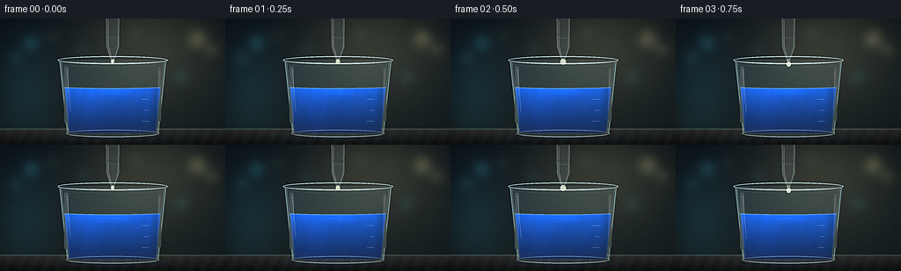
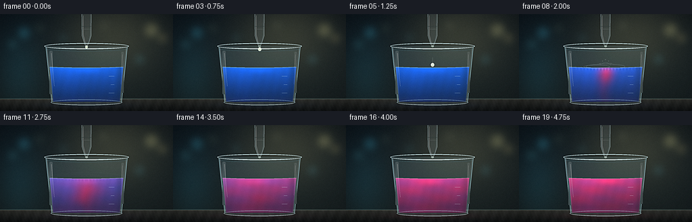

CODING AGENTS AS PIXEL WORLD MODELS
traex/DeepSeek-V4.1-Flash · material_0037
点击播放 · 原生 RGB 像素
逐轮保存的候选
回放视频、检查图与代码变化。
每份候选均可单独播放。实际图片检查记录在下方工具轨迹中。
候选 01播放与检查图
点击播放 · 原生 RGB 像素


展开代码变化
--- 上一保存版本
+++ 本次保存版本
@@ -0,0 +1,466 @@
+from __future__ import annotations
+
+import math
+from pathlib import Path
+
+import cv2
+import numpy as np
+from PIL import Image, ImageDraw, ImageFilter
+from scipy.ndimage import gaussian_filter
+
+import artifact_io
+
+
+CASE_DIR = Path(__file__).resolve().parent
+WIDTH = 256
+HEIGHT = 144
+FRAMES = 20
+FPS = 4.0
+SS = 4 # Supersampling factor for smooth glass edges and small highlights.
+RW = WIDTH * SS
+RH = HEIGHT * SS
+
+IMPACT_TIME = 1.28
+DROP_RELEASE_TIME = 0.53
+
+
+def smoothstep(value: np.ndarray | float) -> np.ndarray | float:
+ value = np.clip(value, 0.0, 1.0)
+ return value * value * (3.0 - 2.0 * value)
+
+
+def mix_color(a: np.ndarray, b: np.ndarray, amount: np.ndarray | float) -> np.ndarray:
+ amount = np.asarray(amount, dtype=np.float32)
+ if amount.ndim == 2:
+ amount = amount[..., None]
+ return a * (1.0 - amount) + b * amount
+
+
+def blend_alpha(image: np.ndarray, color: np.ndarray, alpha: np.ndarray | float) -> np.ndarray:
+ alpha = np.asarray(alpha, dtype=np.float32)
+ if alpha.ndim == 2:
+ alpha = alpha[..., None]
+ return image * (1.0 - alpha) + color * alpha
+
+
+def draw_rgba(image: np.ndarray, painter) -> np.ndarray:
+ base = Image.fromarray(np.clip(image * 255.0, 0, 255).astype(np.uint8), "RGB").convert("RGBA")
+ overlay = Image.new("RGBA", base.size, (0, 0, 0, 0))
+ painter(ImageDraw.Draw(overlay, "RGBA"))
+ result = Image.alpha_composite(base, overlay).convert("RGB")
+ return np.asarray(result, dtype=np.float32) / 255.0
+
+
+def p(value: float) -> float:
+ return value * SS
+
+
+def box(x0: float, y0: float, x1: float, y1: float):
+ return (p(x0), p(y0), p(x1), p(y1))
+
+
+def make_background() -> np.ndarray:
+ x = (np.arange(RW, dtype=np.float32) + 0.5) / SS
+ y = (np.arange(RH, dtype=np.float32) + 0.5) / SS
+ xf = x[None, :]
+ yf = y[:, None]
+
+ top = np.array([0.055, 0.095, 0.125], dtype=np.float32)
+ bottom = np.array([0.10, 0.135, 0.14], dtype=np.float32)
+ t = np.broadcast_to(np.clip(yf / HEIGHT, 0.0, 1.0), (RH, RW))[..., None]
+ bg = top * (1.0 - t) + bottom * t
+
+ spot = np.exp(
+ -(((xf - 171.0) / 82.0) ** 2 + ((yf - 25.0) / 68.0) ** 2)
+ ).astype(np.float32)
+ bg += spot[..., None] * np.array([0.16, 0.14, 0.08], dtype=np.float32)
+
+ side_glow = np.exp(-((xf - 28.0) / 33.0) ** 2 - ((yf - 88.0) / 63.0) ** 2)
+ bg += side_glow[..., None] * np.array([0.015, 0.07, 0.085], dtype=np.float32)
+
+ # Soft, out-of-focus laboratory lights.
+ bokeh = Image.new("RGB", (WIDTH, HEIGHT), (0, 0, 0))
+ d = ImageDraw.Draw(bokeh)
+ circles = [
+ (224, 23, 9, (84, 79, 49)),
+ (240, 35, 5, (85, 74, 43)),
+ (35, 27, 7, (22, 70, 82)),
+ (18, 44, 4, (31, 75, 79)),
+ (58, 20, 3, (59, 71, 51)),
+ (206, 67, 4, (29, 72, 83)),
+ (153, 16, 3, (59, 60, 45)),
+ (93, 35, 3, (27, 61, 70)),
+ ]
+ for cx, cy, radius, color in circles:
+ d.ellipse((cx - radius, cy - radius, cx + radius, cy + radius), fill=color)
+ bokeh = bokeh.filter(ImageFilter.GaussianBlur(5.5))
+ bokeh = bokeh.resize((RW, RH), Image.Resampling.BICUBIC)
+ bg += np.asarray(bokeh, dtype=np.float32) / 255.0 * 0.72
+
+ # Polished bench top.
+ bench_y = 126.0
+ bench = (yf >= bench_y)
+ bt = np.broadcast_to(
+ np.clip((yf - bench_y) / (HEIGHT - bench_y), 0.0, 1.0),
+ (RH, RW),
+ )[..., None]
+ bench_color = (
+ np.array([0.20, 0.205, 0.19], dtype=np.float32) * (1.0 - bt)
+ + np.array([0.065, 0.078, 0.082], dtype=np.float32) * bt
+ )
+ bench_texture = (
+ 0.012 * np.sin(xf * 0.42 + yf * 0.17)
+ + 0.006 * np.sin(xf * 1.17 - yf * 0.45)
+ )
+ bench_texture = np.broadcast_to(bench_texture, (RH, RW))[..., None]
+ bench_color += bench_texture
+ bg = np.where(bench[..., None], bench_color, bg)
+
+ edge = np.exp(-((yf - bench_y) / 0.85) ** 2)
+ bg += edge[..., None] * np.array([0.12, 0.14, 0.13], dtype=np.float32)
+ return np.clip(bg, 0.0, 1.0)
+
+
+def beaker_bounds(y: np.ndarray) -> tuple[np.ndarray, np.ndarray]:
+ q = np.clip((y - 47.0) / (132.0 - 47.0), 0.0, 1.0)
+ return 67.0 + 8.5 * q, 189.0 - 8.5 * q
+
+
+def liquid_surface(x: np.ndarray) -> np.ndarray:
+ xn = np.clip((x - 128.0) / 56.0, -1.0, 1.0)
+ return 78.4 + 1.15 * (1.0 - xn * xn)
+
+
+def concentration(xf: np.ndarray, yf: np.ndarray, t: float) -> np.ndarray:
+ age = max(0.0, t - IMPACT_TIME)
+ if age <= 0.0:
+ return np.zeros_like(xf, dtype=np.float32)
+
+ progress = float(np.clip(age / 3.28, 0.0, 1.0))
+ xn = np.clip((xf - 128.0) / 55.0, -1.0, 1.0)
+ surface = liquid_surface(xf)
+ dn = np.clip((yf - surface) / (130.0 - surface), 0.0, 1.0)
+
+ # Coherent shear creates the curling bands visible during rapid mixing.
+ warp_x = (
+ xn
+ + progress
+ * (
+ 0.045 * np.sin(7.5 * dn - 2.1 * age + 2.4 * xn)
+ + 0.018 * np.sin(15.0 * xn + 3.0 * dn - 1.4 * age)
+ )
+ )
+ warp_d = (
+ dn
+ + progress
+ * (
+ 0.032 * np.sin(8.0 * xn - 2.0 * age)
+ + 0.012 * np.sin(19.0 * xn + 3.0 * age)
+ )
+ )
+
+ center_x = 0.018 * np.sin(1.7 * age + 0.4) * progress
+ center_d = 0.10 + 0.68 * smoothstep(progress)
+ sigma_x = 0.055 + 0.83 * progress
+ sigma_d = 0.075 + 0.96 * progress
+ radius2 = ((warp_x - center_x) / sigma_x) ** 2 + ((warp_d - center_d) / sigma_d) ** 2
+ plume = np.exp(-1.15 * radius2)
+
+ fingers = np.exp(
+ -((warp_x - 0.055 * np.sin(5.2 * warp_d + 1.2 * age)) / 0.17) ** 2
+ -((warp_d - 0.62) / 0.52) ** 2
+ )
+ global_front = smoothstep(np.clip((progress - 0.05) / 0.92, 0.0, 1.0))
+ swirl = (
+ 0.055 * np.sin(8.0 * dn + 5.0 * xn - 1.7 * age)
+ + 0.035 * np.sin(17.0 * dn - 4.0 * xn + 2.0 * age)
+ ) * global_front
+
+ field = global_front * 0.90
+ field += plume * (1.0 - global_front) * 0.72
+ field += fingers * (1.0 - global_front) * 0.28
+ field += swirl
+ return np.clip(field, 0.0, 1.0).astype(np.float32)
+
+
+def render_liquid(base: np.ndarray, t: float) -> tuple[np.ndarray, np.ndarray, np.ndarray]:
+ x = (np.arange(RW, dtype=np.float32) + 0.5) / SS
+ y = (np.arange(RH, dtype=np.float32) + 0.5) / SS
+ xf = x[None, :]
+ yf = y[:, None]
+
+ left, right = beaker_bounds(yf)
+ left = left + 3.3
+ right = right - 3.3
+ surface = liquid_surface(xf)
+ liquid_mask = (
+ (yf >= surface)
+ & (yf <= 130.3)
+ & (xf >= left)
+ & (xf <= right)
+ ).astype(np.float32)
+
+ xn = np.clip((xf - 128.0) / 54.0, -1.0, 1.0)
+ dn = np.clip((yf - surface) / (130.0 - surface), 0.0, 1.0)
+
+ blue_top = np.array([0.035, 0.30, 0.88], dtype=np.float32)
+ blue_bottom = np.array([0.012, 0.075, 0.34], dtype=np.float32)
+ red_top = np.array([0.94, 0.105, 0.36], dtype=np.float32)
+ red_bottom = np.array([0.49, 0.018, 0.18], dtype=np.float32)
+
+ depth_mix = np.power(dn, 0.72)[..., None]
+ blue = blue_top * (1.0 - depth_mix) + blue_bottom * depth_mix
+ red = red_top * (1.0 - depth_mix) + red_bottom * depth_mix
+
+ f = concentration(xf, yf, t)
+ color = mix_color(blue, red, f)
+
+ left_glow = np.exp(-((xn + 0.46) / 0.30) ** 2)
+ center_caustic = np.exp(
+ -((xn - 0.04) / 0.34) ** 2 - ((dn - 0.08) / 0.095) ** 2
+ )
+ depth_light = 1.02 - 0.28 * dn
+ shade = depth_light + 0.11 * left_glow + 0.18 * center_caustic
+ shade += 0.018 * np.sin(25.0 * xn + 5.0 * dn + 0.55 * t)
+ color = color * shade[..., None]
+
+ # A bright, refractive underside and a darker meniscus give the fluid volume.
+ bottom_glow = np.exp(-((dn - 0.96) / 0.075) ** 2) * (0.08 + 0.08 * f)
+ color += bottom_glow[..., None] * np.array([0.45, 0.18, 0.34], dtype=np.float32)
+ side_shadow = np.exp(-((xn - 0.92) / 0.10) ** 2)
+ color *= (1.0 - 0.22 * side_shadow)[..., None]
+
+ alpha = liquid_mask * 0.965
+ base = blend_alpha(base, color, alpha)
+
+ # Surface ripples are strongest for a short interval after impact.
+ age = t - IMPACT_TIME
+ ripple = np.zeros_like(xf, dtype=np.float32)
+ if 0.0 <= age < 2.2:
+ radial = np.abs(xf - 128.0)
+ envelope = np.exp(-age * 1.25) * np.exp(-radial / 33.0)
+ ripple = (
+ np.sin((radial - 16.0 * age) * 1.28 - 2.8 * age)
+ * envelope
+ * np.exp(-((yf - surface - 2.2) / 2.2) ** 2)
+ )
+ ripple *= liquid_mask
+ ripple_color = np.array([0.74, 0.91, 1.0], dtype=np.float32) * (1.0 - f[..., None])
+ ripple_color += np.array([1.0, 0.58, 0.70], dtype=np.float32) * f[..., None]
+ base += ripple[..., None] * ripple_color * 0.20
+
+ meniscus = np.exp(-((yf - surface) / 0.72) ** 2) * liquid_mask
+ meniscus_color = mix_color(
+ np.array([0.72, 0.90, 1.0], dtype=np.float32),
+ np.array([1.0, 0.56, 0.68], dtype=np.float32),
+ f,
+ )
+ base = blend_alpha(base, meniscus_color, meniscus * 0.52)
+
+ # Fine reflected light at the curved liquid edges.
+ edge_liquid = liquid_mask * np.exp(-((np.minimum(xf - left, right - xf)) / 1.0) ** 2)
+ base = blend_alpha(base, np.array([0.78, 0.92, 1.0], dtype=np.float32), edge_liquid * 0.14)
+
+ return np.clip(base, 0.0, 1.0), liquid_mask, f
+
+
+def draw_beaker_glass(image: np.ndarray, liquid_mask: np.ndarray, f: np.ndarray) -> np.ndarray:
+ def painter(draw: ImageDraw.ImageDraw):
+ # Back glass tint.
+ draw.polygon(
+ [(p(67), p(47)), (p(189), p(47)), (p(180.5), p(131)), (p(75.5), p(131))],
+ fill=(171, 214, 220, 18),
+ )
+ draw.ellipse(box(75.5, 126.5, 180.5, 136.0), fill=(171, 214, 220, 15))
+
+ # Beaker rim, opening, and slightly flared lip.
+ draw.ellipse(box(65.5, 43.2, 190.5, 52.0), outline=(207, 235, 238, 165), width=max(1, SS))
+ draw.arc(box(66.7, 45.0, 189.3, 51.2), 8, 172, fill=(248, 255, 255, 120), width=max(1, SS // 2))
+ draw.arc(box(68.5, 47.5, 187.5, 55.0), 8, 172, fill=(76, 111, 119, 115), width=max(1, SS // 2))
+
+ # Tapered side walls.
+ left_line = [(p(67.8), p(48.5)), (p(76.5), p(130.0))]
+ right_line = [(p(188.2), p(48.5)), (p(179.5), p(130.0))]
+ draw.line(left_line, fill=(179, 223, 231, 108), width=max(1, SS))
+ draw.line(right_line, fill=(177, 221, 230, 100), width=max(1, SS))
+ draw.line([(p(69.6), p(50.0)), (p(77.7), p(128.5))], fill=(244, 255, 255, 70), width=max(1, SS // 2))
+ draw.line([(p(186.1), p(50.0)), (p(178.2), p(128.5))], fill=(225, 247, 250, 52), width=max(1, SS // 2))
+
+ # Rounded glass foot.
+ draw.ellipse(box(75.2, 126.8, 180.8, 135.4), outline=(191, 225, 229, 105), width=max(1, SS))
+ draw.arc(box(78.0, 129.2, 178.0, 135.0), 5, 175, fill=(244, 255, 255, 110), width=max(1, SS // 2))
+
+ # Long, soft vertical reflections.
+ draw.rounded_rectangle(box(73.1, 54.5, 77.8, 119.0), radius=p(1.6), fill=(217, 247, 252, 32))
+ draw.rounded_rectangle(box(179.4, 56.0, 183.1, 117.0), radius=p(1.2), fill=(225, 249, 252, 25))
+ draw.line([(p(76.2), p(58.0)), (p(80.2), p(107.0))], fill=(255, 255, 255, 78), width=max(1, SS // 2))
+ draw.line([(p(181.0), p(60.0)), (p(178.9), p(104.0))], fill=(245, 255, 255, 48), width=max(1, SS // 2))
+
+ # Etched graduation ticks.
+ for i, yy in enumerate((92.0, 104.5, 117.0)):
+ width = 8.0 if i != 1 else 5.0
+ draw.line(
+ [(p(169.0 - width), p(yy)), (p(169.0), p(yy))],
+ fill=(225, 246, 247, 92),
+ width=max(1, SS // 2),
+ )
+
+ image = draw_rgba(image, painter)
+
+ # A diffuse glass edge glow, clipped outside the vessel.
+ glow = gaussian_filter(liquid_mask, sigma=1.0 * SS)
+ glow = np.clip(glow - liquid_mask * 0.22, 0.0, 1.0)
+ image += glow[..., None] * np.array([0.05, 0.12, 0.15], dtype=np.float32)
+ return np.clip(image, 0.0, 1.0)
+
+
+def draw_pipette_and_drop(image: np.ndarray, t: float) -> np.ndarray:
+ def painter(draw: ImageDraw.ImageDraw):
+ # Outer glass pipette.
+ draw.polygon(
+ [(p(120.7), p(-5)), (p(135.3), p(-5)), (p(135.0), p(32.0)), (p(131.2), p(44.0)),
+ (p(129.1), p(48.0)), (p(126.9), p(48.0)), (p(124.8), p(44.0)), (p(121.0), p(32.0))],
+ fill=(208, 231, 235, 58),
+ outline=(199, 226, 231, 145),
+ width=max(1, SS // 2),
+ )
+ draw.polygon(
+ [(p(122.7), p(0)), (p(133.3), p(0)), (p(132.8), p(31.0)), (p(129.9), p(42.5)),
+ (p(128.4), p(45.5)), (p(127.6), p(45.5)), (p(126.1), p(42.5)), (p(123.2), p(31.0))],
+ fill=(224, 244, 245, 28),
+ )
+ draw.line([(p(123.2), p(2)), (p(123.2), p(30.5)), (p(126.0), p(43.2))],
+ fill=(255, 255, 255, 118), width=max(1, SS // 2))
+ draw.line([(p(132.9), p(3)), (p(132.7), p(31.0)), (p(130.0), p(42.5))],
+ fill=(79, 107, 113, 78), width=max(1, SS // 2))
+
+ # Two subtle rings near the pipette shoulder.
+ draw.line([(p(121.2), p(18.0)), (p(134.8), p(18.0))], fill=(71, 99, 106, 65), width=max(1, SS // 2))
+ draw.line([(p(121.4), p(22.0)), (p(134.6), p(22.0))], fill=(233, 249, 250, 65), width=max(1, SS // 2))
+ draw.ellipse(box(126.0, 46.4, 130.0, 49.0), fill=(236, 255, 245, 125))
+
+ if t < DROP_RELEASE_TIME:
+ q = float(np.clip(t / DROP_RELEASE_TIME, 0.0, 1.0))
+ r = 1.9 + 1.2 * smoothstep(q)
+ cy = 49.2 + 0.55 * q
+ draw.ellipse(box(128.0 - r, cy - r * 1.15, 128.0 + r, cy + r * 0.95),
+ fill=(234, 255, 222, 205), outline=(255, 255, 241, 205), width=max(1, SS // 2))
+ draw.ellipse(box(126.8, cy - 1.8, 127.8, cy - 0.5), fill=(255, 255, 255, 210))
+ elif t < IMPACT_TIME:
+ q = float(np.clip((t - DROP_RELEASE_TIME) / (IMPACT_TIME - DROP_RELEASE_TIME), 0.0, 1.0))
+ cy = 50.0 + 27.8 * q * q
+ cx = 128.0 + 0.45 * math.sin(q * math.pi)
+ draw.line([(p(cx), p(cy - 11.0)), (p(cx), p(cy - 3.0))],
+ fill=(222, 251, 231, 45), width=max(1, SS // 2))
+ draw.ellipse(box(cx - 2.5, cy - 2.9, cx + 2.5, cy + 2.4),
+ fill=(235, 255, 225, 215), outline=(255, 255, 240, 205), width=max(1, SS // 2))
+ draw.ellipse(box(cx - 1.25, cy - 1.6, cx - 0.15, cy - 0.3), fill=(255, 255, 255, 230))
+
+ # Crown splash and short-lived satellite droplets.
+ age = t - IMPACT_TIME
+ if 0.0 <= age < 0.9:
+ fade = int(210 * max(0.0, 1.0 - age / 0.9))
+ draw.arc(box(120.0, 72.4, 136.0, 82.0), 197, 343,
+ fill=(236, 255, 250, fade), width=max(1, SS // 2))
+ draw.arc(box(114.0, 72.0, 142.0, 84.0), 205, 335,
+ fill=(198, 244, 247, int(fade * 0.65)), width=max(1, SS // 2))
+ splash = [
+ (120.0, 75.0, 0.5), (123.5, 72.4, 0.8), (128.0, 71.0, 1.0),
+ (132.5, 72.3, 0.8), (136.0, 74.8, 0.55),
+ ]
+ for dx, y0, scale in splash:
+ rise = 4.0 * scale * min(1.0, age / 0.22)
+ draw.ellipse(box(dx - 0.55, y0 - rise, dx + 0.55, y0 - rise + 1.2),
+ fill=(238, 255, 249, int(fade * 0.9)))
+ if 0.0 <= age < 1.6:
+ fade = max(0.0, 1.0 - age / 1.6)
+ for i, (cx, radius, speed) in enumerate(((115.0, 16.0, 1.0), (128.0, 11.0, 1.55))):
+ rr = 2.0 + speed * 24.0 * age
+ draw.ellipse(
+ box(cx - rr, 78.2 - rr * 0.14, cx + rr, 78.2 + rr * 0.14),
+ outline=(225, 252, 255, int(95 * fade)),
+ width=max(1, SS // 2),
+ )
+
+ return draw_rgba(image, painter)
+
+
+def postprocess(image: np.ndarray, frame_index: int) -> np.ndarray:
+ # Downsample before subtle lens and film effects.
+ small = Image.fromarray(np.clip(image * 255.0, 0, 255).astype(np.uint8), "RGB")
+ small = small.resize((WIDTH, HEIGHT), Image.Resampling.LANCZOS)
+ arr = np.asarray(small, dtype=np.float32) / 255.0
+
+ # Gentle highlight bloom.
+ luminance = np.max(arr, axis=2, keepdims=True)
+ bright = np.clip((luminance - 0.68) / 0.32, 0.0, 1.0)
+ bloom = gaussian_filter(arr * bright, sigma=(2.6, 2.6, 0.0))
+ arr = 1.0 - (1.0 - arr) * (1.0 - bloom * 0.22)
+
+ # Filmic contrast and restrained teal shadows.
+ arr = np.clip((arr - 0.5) * 1.055 + 0.5, 0.0, 1.0)
+ shadow = np.clip(1.0 - np.max(arr, axis=2, keepdims=True) * 2.2, 0.0, 1.0)
+ arr += shadow * np.array([0.004, 0.010, 0.013], dtype=np.float32)
+
+ # Very light sharpening preserves the glass edges without ringing.
+ sharp = small.filter(ImageFilter.UnsharpMask(radius=1.0, percent=72, threshold=3))
+ arr = np.asarray(sharp, dtype=np.float32) / 255.0
+
+ x = np.linspace(-1.0, 1.0, WIDTH, dtype=np.float32)[None, :]
+ y = np.linspace(-1.0, 1.0, HEIGHT, dtype=np.float32)[:, None]
+ vignette = np.clip(1.0 - 0.19 * (x * x * 0.72 + y * y), 0.0, 1.0)
+ arr *= vignette[..., None]
+
+ rng = np.random.default_rng(4000 + frame_index)
+ grain = rng.normal(0.0, 0.0042, size=(HEIGHT, WIDTH, 1)).astype(np.float32)
+ arr += grain
+ return np.clip(arr * 255.0 + 0.5, 0, 255).astype(np.uint8)
+
+
+def render_frame(index: int, background: np.ndarray) -> np.ndarray:
+ t = index / FPS
+ image = background.copy()
+
+ # Broad reflected color on the bench below the vessel.
+ x = (np.arange(RW, dtype=np.float32) + 0.5) / SS
+ y = (np.arange(RH, dtype=np.float32) + 0.5) / SS
+ xf = x[None, :]
+ yf = y[:, None]
+ age = max(0.0, t - IMPACT_TIME)
+ change = float(smoothstep(np.clip(age / 3.28, 0.0, 1.0)))
+ reflection = np.exp(-((xf - 128.0) / 61.0) ** 2 - ((yf - 135.0) / 4.5) ** 2)
+ reflection_color = np.array([0.02, 0.10, 0.25], dtype=np.float32) * (1.0 - change)
+ reflection_color += np.array([0.30, 0.035, 0.10], dtype=np.float32) * change
+ image += reflection[..., None] * reflection_color * 0.25
+
+ image = draw_beaker_glass(image, np.zeros((RH, RW), dtype=np.float32), np.zeros((RH, RW), dtype=np.float32))
+ image, liquid_mask, field = render_liquid(image, t)
+ image = draw_beaker_glass(image, liquid_mask, field)
+ image = draw_pipette_and_drop(image, t)
+ return postprocess(image, index)
+
+
+def main() -> None:
+ background = make_background()
+ frames = np.stack([render_frame(i, background) for i in range(FRAMES)], axis=0)
+ artifact_io.save(frames, CASE_DIR)
+
+ # A directly playable MP4 is convenient outside the supplied HTML player.
+ writer = cv2.VideoWriter(
+ str(CASE_DIR / "video.mp4"),
+ cv2.VideoWriter_fourcc(*"mp4v"),
+ FPS,
+ (WIDTH, HEIGHT),
+ )
+ if writer.isOpened():
+ for frame in frames:
+ writer.write(cv2.cvtColor(frame, cv2.COLOR_RGB2BGR))
+ writer.release()
+ else:
+ writer.release()
+
+ print(f"Rendered {len(frames)} frames at {WIDTH}x{HEIGHT}, {FPS:g} fps.")
+
+
+if __name__ == "__main__":
+ main()
候选 02播放与检查图
点击播放 · 原生 RGB 像素

展开代码变化
--- 上一保存版本
+++ 本次保存版本
@@ -205,8 +205,8 @@
blue_top = np.array([0.035, 0.30, 0.88], dtype=np.float32)
blue_bottom = np.array([0.012, 0.075, 0.34], dtype=np.float32)
- red_top = np.array([0.94, 0.105, 0.36], dtype=np.float32)
- red_bottom = np.array([0.49, 0.018, 0.18], dtype=np.float32)
+ red_top = np.array([0.96, 0.105, 0.16], dtype=np.float32)
+ red_bottom = np.array([0.50, 0.018, 0.072], dtype=np.float32)
depth_mix = np.power(dn, 0.72)[..., None]
blue = blue_top * (1.0 - depth_mix) + blue_bottom * depth_mix
@@ -246,13 +246,13 @@
)
ripple *= liquid_mask
ripple_color = np.array([0.74, 0.91, 1.0], dtype=np.float32) * (1.0 - f[..., None])
- ripple_color += np.array([1.0, 0.58, 0.70], dtype=np.float32) * f[..., None]
+ ripple_color += np.array([1.0, 0.43, 0.49], dtype=np.float32) * f[..., None]
base += ripple[..., None] * ripple_color * 0.20
meniscus = np.exp(-((yf - surface) / 0.72) ** 2) * liquid_mask
meniscus_color = mix_color(
np.array([0.72, 0.90, 1.0], dtype=np.float32),
- np.array([1.0, 0.56, 0.68], dtype=np.float32),
+ np.array([1.0, 0.42, 0.48], dtype=np.float32),
f,
)
base = blend_alpha(base, meniscus_color, meniscus * 0.52)
候选 03播放与检查图
可观测工具轨迹
实际执行的命令与返回图片。
命令 1exit 0
/bin/bash -c "pwd && rg --files -g '"'!*node_modules*'"' -g '"'!*.mp4'"' -g '"'!*.mov'"' | sed -n '1,120p'"
命令 2exit 0
/bin/bash -c 'cat prompt.txt'
命令 3exit 0
/bin/bash -c 'cat GENERATION_RULES.md'
命令 4exit 0
/bin/bash -c 'cat task_spec.json'
命令 5exit 0
/bin/bash -c "ls -la && find . -maxdepth 2 -type f -printf '%p %s bytes\\n' | sort | sed -n '1,160p'"
命令 6exit 0
/bin/bash -c "sed -n '1,240p' artifact_io.py"
命令 7exit 0
/bin/bash -c "python - <<'PY'
import numpy, PIL
print('numpy', numpy.__version__)
print('PIL', PIL.__version__)
try:
import scipy
print('scipy', scipy.__version__)
except Exception as e: print('no scipy', e)
try:
import cv2
print('cv2', cv2.__version__)
except Exception as e: print('no cv2', e)
PY"命令 8exit 0
/bin/bash -c 'which ffmpeg || true; which ffprobe || true'
命令 9exit 0
/bin/bash -c "sed -n '1,260p' player_template.html"
命令 10exit 0
/bin/bash -c "python - <<'PY'
from PIL import ImageFont
for p in ['/usr/share/fonts/truetype/dejavu/DejaVuSans.ttf','/usr/share/fonts/truetype/dejavu/DejaVuSans-Bold.ttf']:
try:
f=ImageFont.truetype(p, 12); print('OK', p)
except Exception as e: print('NO',p,e)
PY"命令 11exit 1
/bin/bash -c 'python generate.py'
命令 12exit 1
/bin/bash -c 'python generate.py'
命令 13exit 1
/bin/bash -c 'python generate.py'
命令 14exit 1
/bin/bash -c 'python generate.py'
命令 15exit 1
/bin/bash -c 'python generate.py'
命令 16exit 0
/bin/bash -c 'python generate.py'
命令 17exit 0
/bin/bash -c 'which chafa || true; which viu || true; which jp2 || true; which img2txt || true'
命令 18exit 0
/bin/bash -c "python - <<'PY'
from PIL import Image
import numpy as np
for fi in [0,4,5,6,8,12,19]:
a=np.asarray(Image.open(f'frames/{fi:02d}.png')).astype(float)
# downsample to 64x36 and classify by hue/value
im=Image.fromarray(a.astype('uint8')).resize((64,36),Image.Resampling.BOX)
x=np.asarray(im).astype(float)/255
r,g,b=x[...,0],x[...,1],x[...,2]
mx=x.max(2); mn=x.min(2); sat=(mx-mn)/(mx+1e-6)
chars=[]
for yy in range(36):
row=''
for xx in range(64):
R,G,B=x[yy,xx]
if mx[yy,xx]<.06: c=' '
elif B>.25 and B>R*1.35 and B>G*1.10: c='B'
elif R>.24 and R>B*1.25 and R>G*1.1: c='R'
elif R>.2 and B>.2 and R>G*1.2 and B>G*1.1: c='P'
elif mx[yy,xx]>.62 and sat[yy,xx]<.18: c='W'
elif mx[yy,xx]>.33 and sat[yy,xx]<.3: c='g'
elif mx[yy,xx]>.2: c='.'
else: c=','
row+=c
chars.append(row)
print('\\nFRAME',fi)
print('\\n'.join(chars))
PY"命令 19exit 0
/bin/bash -c "python - <<'PY'
from PIL import Image
import numpy as np
im=np.asarray(Image.open('frames/00.png')).astype(float)/255
for y in [10,25,40,50,60,75,85,100,120,130,135,140]:
print('y',y,[(x, tuple((im[y,x]*255).astype(int))) for x in [20,64,72,90,110,127,145,165,184,195,225]])
PY"命令 20exit 0
/bin/bash -c "python - <<'PY'
from PIL import Image
import numpy as np
for i in range(20):
a=np.asarray(Image.open(f'frames/{i:02d}.png')).astype(float)
roi=a[82:127,82:174]
mean=roi.reshape(-1,3).mean(0)
# percentage pixels blue-dominant, red dominant
r,g,b=roi[...,0],roi[...,1],roi[...,2]
blue=((b>r*1.25)&(b>g*1.05)).mean()*100
red=((r>b*1.12)&(r>g*1.08)).mean()*100
print(f'{i:02d} t={i/4:.2f} mean={mean.round(1)} blue={blue:5.1f}% red={red:5.1f}%')
PY"命令 21exit 0
/bin/bash -c "python - <<'PY'
from PIL import Image
import numpy as np
ims=[np.asarray(Image.open(f'frames/{i:02d}.png')).astype(np.float32) for i in range(20)]
for i in range(1,20):
d=np.abs(ims[i]-ims[i-1])
print(f'{i-1:02d}->{i:02d} mean={d.mean():6.2f} p95={np.percentile(d,95):6.1f} changed={(d.max(2)>8).mean()*100:5.1f}%')
PY"命令 22exit 0
/bin/bash -c "python - <<'PY'
from PIL import Image
import numpy as np
for i in [0,5,6,12,19]:
a=np.asarray(Image.open(f'frames/{i:02d}.png')).astype(float)/255
# coarse rgb image in ANSI truecolor, 64x36
im=np.asarray(Image.fromarray((a*255).astype('uint8')).resize((64,36),Image.Resampling.BOX)).astype(int)
print('\\nFRAME',i)
for row in im:
print(''.join(f'\\x1b[48;2;{r};{g};{b}m ' for r,g,b in row)+'\\x1b[0m')
PY"命令 23exit 0
/bin/bash -c 'python generate.py'
命令 24exit 0
/bin/bash -c "python - <<'PY'
from pathlib import Path
from PIL import Image
import numpy as np, json
p=Path('.')
frames=sorted((p/'frames').glob('*.png'))
print('frames',len(frames))
for f in frames:
im=Image.open(f)
assert im.size==(256,144) and im.mode=='RGB', (f,im.size,im.mode)
a=np.load('pixels.npz')['pixels']
print('npz',a.shape,a.dtype,a.min(),a.max())
print('inspection',Image.open('inspection.png').size)
print('transition',Image.open('transition_check.png').size)
print('video', (p/'video.mp4').stat().st_size)
print('html', (p/'index.html').stat().st_size)
# Endpoint color check.
im=np.asarray(Image.open('frames/19.png')).astype(float)
roi=im[85:125,85:170].reshape(-1,3)
print('endpoint mean RGB',roi.mean(0).round(1), 'R/B', round(roi.mean(0)[0]/roi.mean(0)[2],2))
# Chroma continuity.
means=[]
for f in frames:
im=np.asarray(Image.open(f)).astype(float)
means.append(im[85:125,85:170].reshape(-1,3).mean(0))
print('max adjacent color jump',np.abs(np.diff(means,axis=0)).max().round(2))
PY"命令 25exit 0
/bin/bash -c "python - <<'PY'
from PIL import Image
import numpy as np
ims=[]
for i in [0,4,6,8,10,12,14,16,19]:
a=np.asarray(Image.open(f'frames/{i:02d}.png').resize((128,72),Image.Resampling.LANCZOS))
ims.append(a)
sheet=np.concatenate([np.concatenate(ims[r*3:(r+1)*3],axis=1) for r in range(3)],axis=0)
# terminal half-block preview
for yy in range(0,sheet.shape[0],2):
line=[]
for xx in range(sheet.shape[1]):
top=sheet[yy,xx]; bot=sheet[min(yy+1,sheet.shape[0]-1),xx]
line.append(f'\\x1b[38;2;{top[0]};{top[1]};{top[2]}m\\x1b[48;2;{bot[0]};{bot[1]};{bot[2]}mâ')
print(''.join(line)+'\\x1b[0m')
PY"命令 26exit 0
/bin/bash -c 'ls -lh generate.py frames pixels.npz inspection.png transition_check.png index.html video.mp4 && python -m py_compile generate.py'
保存候选 3 份；完成命令 26 次；可验证图片返回 0 张。原始 API 响应与完整日志保留在本地。